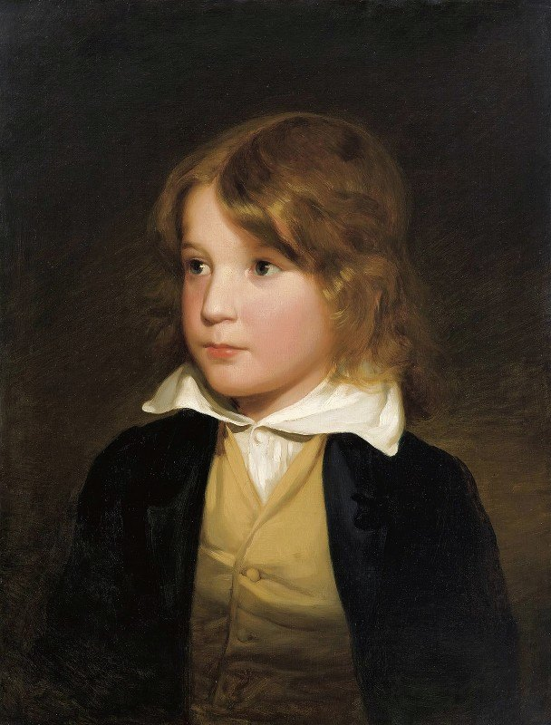

August Schaeffer (1916)
Wilhelm A. Vita (Austrian, 1846-1919)
Wilhelm A. Vita (Austrian, 1846-1919)
François-Joseph Navez (Belgian, 1787 - 1869)
Will Bradley (American, 1868 – 1962)
Charles Rochussen (Dutch, 1814 – 1894)
Felix Schlesinger (German, 1833-1910)
Charles Robinson (English, 1870–1937)
Franz Marc (German, 1880-1916)
Ragnhild Keyser (Norwegian, 1889 – 1943)
Jean François Janinet (French, 1752-1814)
Johann Friedrich Naumann (German, 1780 – 1857)
Henri Jonas (Dutch, 1878-1944)
Max Rentel (German, 1850-1911)
Sir Francis Grant (English, 1803–1878)
Jean-François Millet (French, 1814-1875)
Alfred Philippe Roll (French, 1846–1919)
Louis Van Engelen (Belgian, 1856-1940)
Jean-Victor Schnetz (French, 1787 – 1870)
Maurice Pillard Verneuil (French, 1869-1942)
Adolph Tidemand (Norwegian, 1814-1876)
E Hariel
Hans Makart (Austrian, 1840 - 1884)
Jean-Victor Schnetz (French, 1787 – 1870)
내용을 적어주는 부분